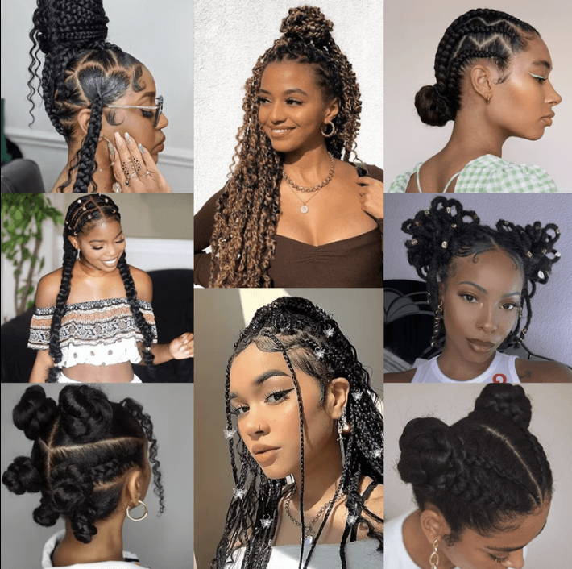
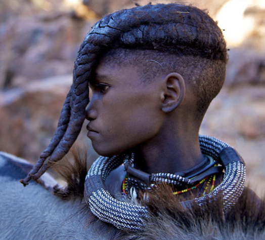
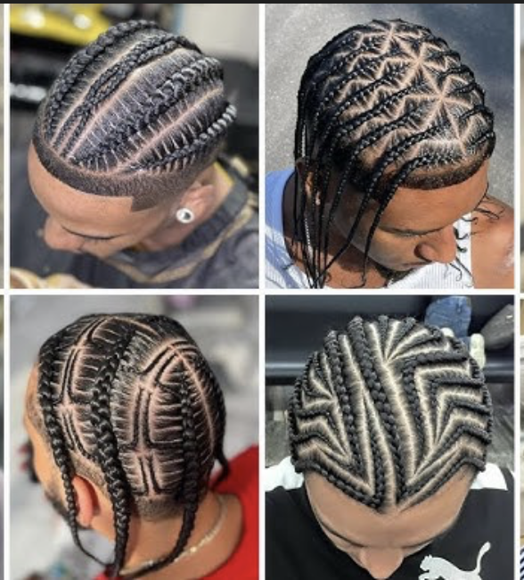
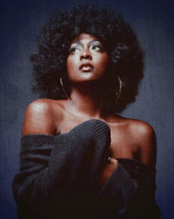
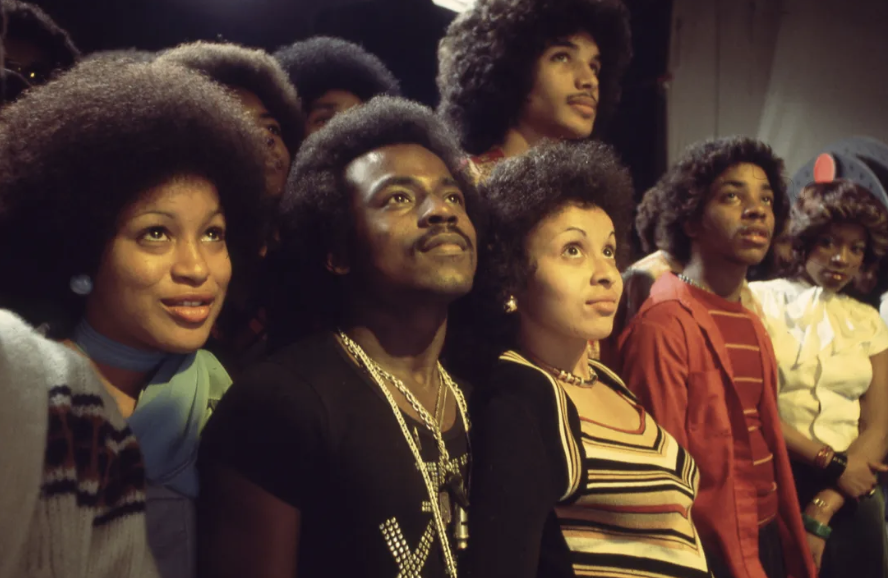
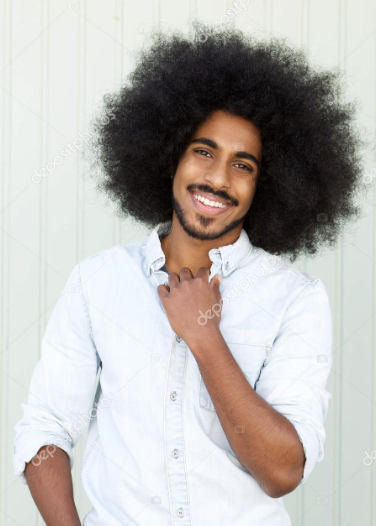
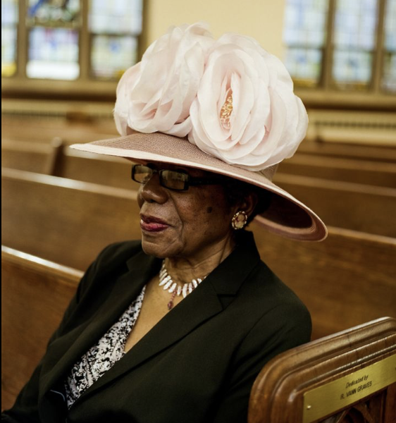
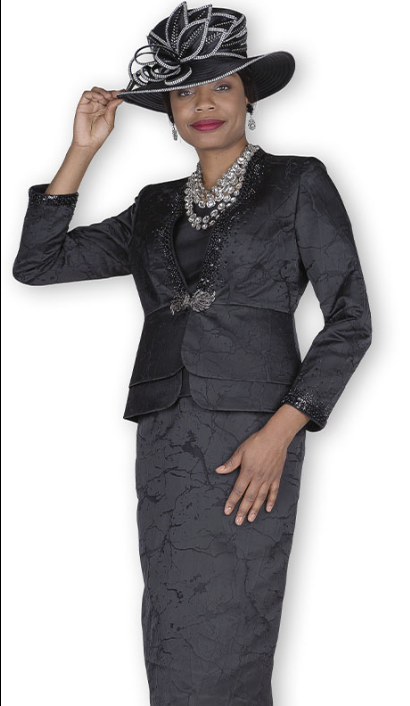
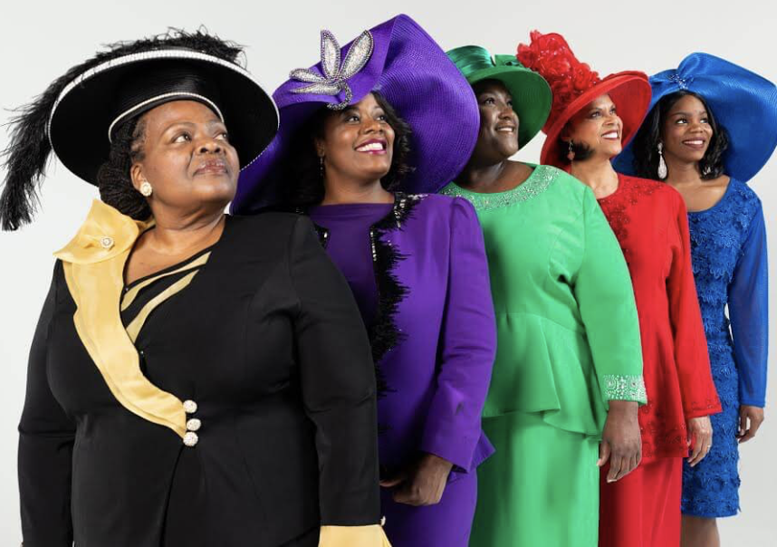
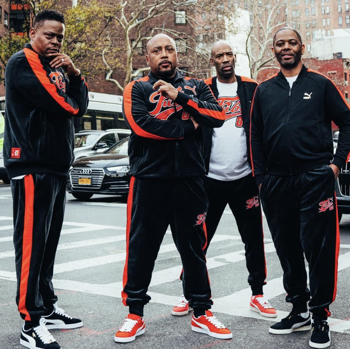

Soul & Strand: Coils, Kinks, and Cultural Keysteps
Style choices in the Black community reflect identity, creativity, and cultural pride.
Return to HomeHair and Fashion as Cultural Storytelling
Black hair and fashion are more than trends. They are storytelling tools. From braids used for survival to streetwear shaping global culture, each style reflects strength, identity, and resilience.
Braids and Cornrows
- Braids and cornrows date back to ancient African civilizations and were used to show tribe, age, marital status, and social rank.
- During slavery in the United States, enslaved Africans braided hair to preserve cultural identity when they had little else.
- Some braid patterns were used to map escape routes for survival.
- Natural styles such as braids became symbols of honor during the Civil Rights and Black Power movements.
- Black communities used hair to protect culture, communicate, and survive.


The Afro
- During the Civil Rights Movement in the 1960s and 1970s, the afro became a major cultural symbol.
- Activists and public figures embraced natural hair to reject Western beauty standards.
- The style was often associated with self-confidence, political awareness, and cultural pride.
- The afro challenged discrimination and empowered people to embrace their natural selves.



Sunday Best and Church Hats
- Many Black Americans wore their finest clothing to church after slavery as a symbol of dignity and self-worth.
- Intricate church hats became a tradition among Black women, representing creativity and elegance.
- Dressing well became a way to command respect in a society that often denied it.
- Looking put together was a peaceful but powerful act of resistance against harmful stereotypes.



Streetwear and Sneaker Culture
- Black communities helped shape streetwear culture through music, especially hip-hop.
- Brands like FUBU (For Us, By Us) celebrated Black entrepreneurship and empowerment.
- Sneaker culture grew with basketball and hip-hop, as athletes and artists influenced global fashion.
- Black creativity turned limited resources into worldwide cultural influence.


